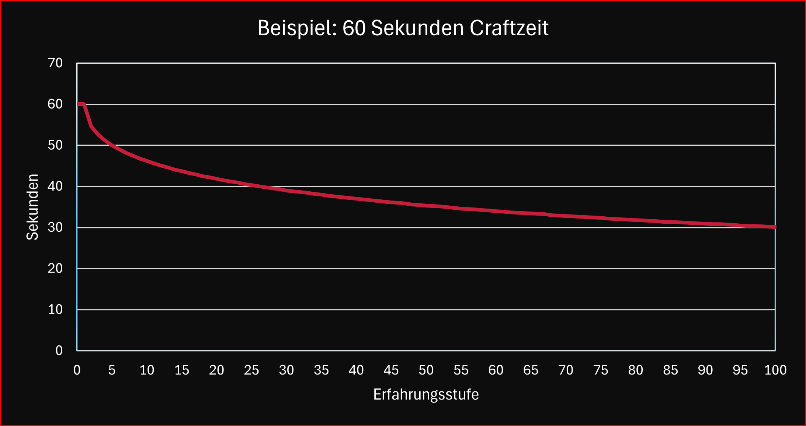

−Inhaltsverzeichnis
Berufe
Allgemein
In History of Khorinis stehen dir zahlreiche Berufe und Berufsgruppen offen. Du kannst dich frei entfalten und jeden gewünschten Beruf ergreifen – sogar Mischberufe sind möglich, sofern du Lehrer findest, die bereit sind, dir ihre Fähigkeiten beizubringen. Wir verzichten hierbei vollkommen auf die üblichen Handwerks NPCs und überlassen dies vollkommen den Spielern, wie das funktioniert wird in Spezialisierungen weiter unten beschrieben. Beachte dabei, dass das Erlernen von Rezepten Lernpunkte kostet.
Jeder Beruf hat einen oder mehrere klare Startpunkte, die kein besonderen Voraussetzungen erfordern. Der Jäger fängt z.B. damit an Tiere auszunehmen und so Fleisch zu gewinnen, der Bogner wird sich als erstes an einer simplen Armbrust oder einem Kurzbogen versuchen. Sobald du dich für einen Beruf entschieden hast, kannst du erste grundlegende Rezepte und Techniken von einem Lehrer erlernen. Von dort aus erweiterst du dein Wissen durch zusätzliche Rezepte, die jedoch zunehmend spezifische Anforderungen haben können. Oft musst du bereits ein anderes Rezept beherrschen, um ein neues erlernen zu können. Beispielsweise benötigst du das Wissen, wie man eine Heilessenz herstellt, bevor du den Heilextrakt brauen kannst. In manchen Fällen sind auch bestimmte Attribute erforderlich, wie etwa eine Mindestmenge an Mana zur Herstellung einer Manaessenz.
Welche Attribute du genau benötigst, sagen dir diese Symbole:


Berufsgruppen
Wir haben aktuell folgende Berufsgruppen:
- Alchemist
- Baumeister
- Bergarbeiter
- Schmelzer
- Schürfer
- Bogner
- Bogner
- Armbrustbauer
- Gelehrter
- Heiler
- Jäger
- Landwirt
- Schmied
- Werkzeugschmied
- Einhandschmied
- Zweihandschmied
- Schneider
- Schreiner
- Versorger
- Koch
- Fischer
- Metzger
- Bäcker
Spezialisierungen
Jeder Charakter kann sich auf eine Berufsgruppe spezialisieren. Diese Spezialisierung ermöglicht es dir, eigenständig innerhalb dieser Berufsgruppe zu forschen. Ein Versorger könnte beispielsweise rohes Fleisch nehmen und durch Experimentieren lernen, wie man daraus genießbares, gebratenes Fleisch herstellt. Dafür benötigst du zwar keinen Lehrer mehr, wirst jedoch etwas an Material verbrauchen, bis du die Herstellung erfolgreich gemeistert hast. Je komplizierter das Rezept, desto mehr und hochwertigere Materialien werden dafür nötig sein. Es ist also ratsam sich, wenn möglich, doch einen Lehrer zu suchen, gerade für sehr fortgeschrittene Rezepte. Zusätzlich verbraucht man weniger Lernpunkte, wenn man ein Rezept in dem Berufszweig lernen möchte, auf das man spezialisiert ist. Bitte beachte, dass die Spezialisierung der Berufsgruppe gilt, man kann sich also nicht nur auf den Koch spezialisieren, sondern auf den gesamten Bereich, den der Versorger abdeckt.
Freie Rezepte und Perks
Zusätzlich zu den regulären Berufen gibt es einige wenige freie Rezepte und Perks, die jeder für eine geringe Menge an Lernpunkten eigenständig erlernen kann. Dazu gehören einfache Tätigkeiten wie das allseits beliebte „Einfach mal hacken“ an einer Erzader, das Angeln oder das Fällen eines Baums. Auch wenn diese Fähigkeiten keinem spezifischen Beruf vorbehalten sind, sind sie dennoch bestimmten Berufszweigen zugeordnet. Wenn du planst, einen dieser Berufe zu ergreifen, ist es daher sinnvoll, deine Spezialisierung frühzeitig festzulegen.
Erfahrung
Du sammelst für jedes einzelne Rezept wertvolle Erfahrungspunkte, indem du es einfach anwendest. Dabei gibt es keine feste Obergrenze – das bedeutet, dass du stets dazulernen und deine Fähigkeiten immer weiter verbessern kannst. Mit jeder neuen Erfahrungsstufe wirst du effizienter und schneller in der Herstellung, was dir besonders bei der Produktion von Massenwaren zugutekommt. So wird das Schnitzen von Pfeilen beispielsweise mit der Zeit deutlich flüssiger und weniger zeitaufwendig – ein wahrer Segen, gerade wenn es darum geht, größere Mengen herzustellen. Glücklicherweise sind gerade Massenprodukte wie die Pfeile bereits so konzipiert, dass du sie nicht einzeln fertigen musst, aber auch hier zeigt sich: Übung macht den Meister, und je mehr du lernst, desto schneller wirst du.
Beispiel
Hier siehst du veranschaulicht, welchen Einfluss deine Erfahrungsstufen auf das Herstellen eines Gegestands haben, der als Basis 60 Sekunden dauert, um hergestellt zu werden.
